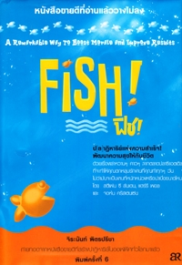

Toggle navigation
หน้าหลัก
หนังสือน่าอ่าน
ผู้จัดทำ
A book
is a device to ignite the imagination
Alan Bennett
Fish! ฟิช!

ผู้เขียน : สตีเฟน ซี ลันเดน, แฮร์รี พอล และ จอห์น คริสเตนเซ่น
ผู้แปล : จิระนันท์ พิตรปรีชา
“Fish! ฟิช!” เล่มนี้ เป็นหนังสือขายดีที่อ่านแล้วแทบวางไม่ลงเลยล่ะค่ะ เป็นป(ล)าฏิหาริย์แห่งความสำเร็จ! ที่พัฒนาความสุขให้แก่ชีวิต ด้วยเรื่องราวหวานๆ คาวๆ จากตลาดปลาซีแอตเติล ที่จะทำให้คุณตกหลุมรักงานที่คุณทำอยู่ทุกๆ วัน ไม่ว่ามันจะเป็นงานที่หนักหน่วงหรือน่าเบื่อขนาดไหนก็ตาม โดยถ่ายทอดจากหนังสือขายดีที่สร้างปาฏิหาริย์ในออฟฟิศทั่วโลกมาแล้ว โดยเนื้อหาภายในเล่มจะเป็นการบอกถึงหลักการปรัชญาปลายิ้ม 4 ข้อ ได้แก่ เล่น (play), สร้างสรรค์วันดี (make their day), ใส่ใจให้บริการ (be there) และเลือกทัศนคติของคุณเอง (choose your attitude) ที่ช่วยเสริมสร้างให้ออฟฟิศของคุณเต็มไปด้วยบรรยากาศสนุกสนานครึกครื้นมีชีวิตชีวา เพื่อเป็นการสร้างเสริมประสิทธิภาพและประสิทธิผลในงานของคุณ ตลอดจนสร้างรอยยิ้มความประทับใจให้แก่ลูกค้าด้วย หากคุณได้แง่คิดมุมมองใหม่ๆ และเมื่องานไม่ใช่สิ่งที่น่าเบื่อสำหรับคุณอีกต่อไป ไม่ว่างานจะหนักแค่ไหน คุณก็คงพร้อมที่จะลุยกับมันแล้วล่ะ ลองเปลี่ยนออฟฟิศของคุณดูนะคะ แล้วจะรู้ว่าบ้านหลังที่สองของคุณน่าอยู่กว่าที่คิด…